File: 000750.gt.txt (if the image is defective, simply delete all Arabic text and the line will be excluded)
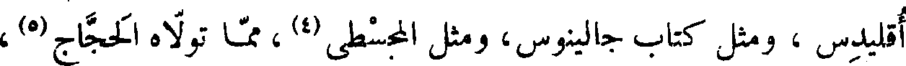
أقليدس ، ومثل كتاب جالينوس ، ومثل المجسطى(4) ، مما تولاه الحجاج(5) ،
File: 000751.gt.txt (if the image is defective, simply delete all Arabic text and the line will be excluded)
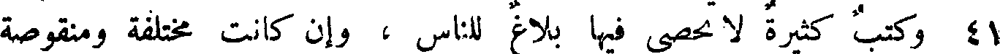
41 وكتب كثيرة لا تحصى فيها بلاغ للناس ، وإن كانت مختلفة ومنقوصة
File: 000752.gt.txt (if the image is defective, simply delete all Arabic text and the line will be excluded)
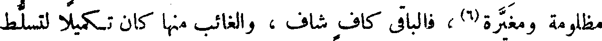
مظلومة ومغيرة(6) ، فالباقي كاف شاف ، والغائب منها كان تكميلا لتسلط
File: 000753.gt.txt (if the image is defective, simply delete all Arabic text and the line will be excluded)
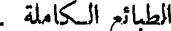
الطبائع الكاملة .
File: 000754.gt.txt (if the image is defective, simply delete all Arabic text and the line will be excluded)
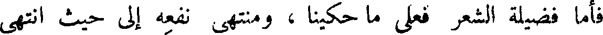
فأما فضيلة الشعر فعلى ما حكينا ، ومنتهى نفعه إلى حيث انتهى
File: 000755.gt.txt (if the image is defective, simply delete all Arabic text and the line will be excluded)
بنا القول(7) .
File: 000756.gt.txt (if the image is defective, simply delete all Arabic text and the line will be excluded)
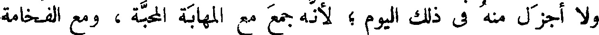
ولا أجزل منه في ذلك اليوم ؛ لأنه جمع مع المهابة المحبة ، ومع الفخامة
File: 000757.gt.txt (if the image is defective, simply delete all Arabic text and the line will be excluded)
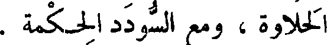
الحلاوة ، ومع السوودد الحكمة .
File: 000758.gt.txt (if the image is defective, simply delete all Arabic text and the line will be excluded)
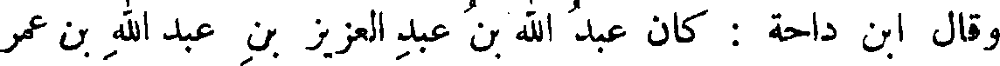
وقال ابن داحة : كان عبد الله بن عبد العزيز بن عبد الله بن عمر
File: 000759.gt.txt (if the image is defective, simply delete all Arabic text and the line will be excluded)
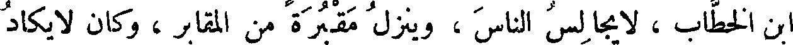
بن الخطاب ، لا يجالس الناس ، وينزل مقبرة من المقابر ، وكان لا يكاد
File: 000760.gt.txt (if the image is defective, simply delete all Arabic text and the line will be excluded)
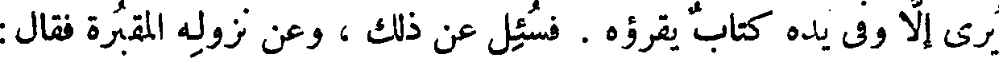
يرى إلا وفي يده كتاب يقرؤه . فسئل عن ذلك ، وعن نزوله المقبرة فقال :
File: 000761.gt.txt (if the image is defective, simply delete all Arabic text and the line will be excluded)
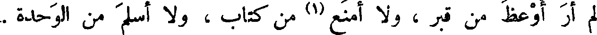
لم أر أوعظ من قبر ، ولا أمنع (1) من كتاب ، ولا أسلم من الوحدة .
File: 000762.gt.txt (if the image is defective, simply delete all Arabic text and the line will be excluded)
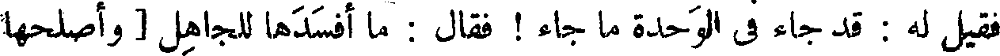
فقيل له : قد جاء في الوحدة ما جاء ! فقال : ما أفسدها للجاهل [ وأصلحها
File: 000763.gt.txt (if the image is defective, simply delete all Arabic text and the line will be excluded)
( ضروب من الخطوط )
File: 000764.gt.txt (if the image is defective, simply delete all Arabic text and the line will be excluded)
للعاقل! ] .
File: 000765.gt.txt (if the image is defective, simply delete all Arabic text and the line will be excluded)
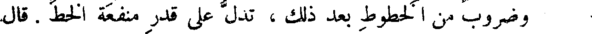
وضروب من ا لخطوط بعد ذلك ، تدل على قدر منفعة الخط . قال
File: 000766.gt.txt (if the image is defective, simply delete all Arabic text and the line will be excluded)
الله تبارك وتعالى ( كراما كاتبين . يعلمون ما تفعلون ) وقال الله
File: 000767.gt.txt (if the image is defective, simply delete all Arabic text and the line will be excluded)
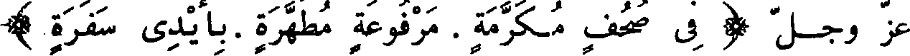
عز وجل ( في صحف مكرمة . مرفوعة مطهرة . بأيدي سفرة )
File: 000768.gt.txt (if the image is defective, simply delete all Arabic text and the line will be excluded)
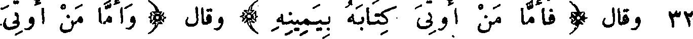
32 وقال ( فأما من أوتي كتابه بيمينه ) وقال ( وأما من أوتي
File: 000769.gt.txt (if the image is defective, simply delete all Arabic text and the line will be excluded)
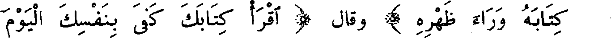
كتابه وراء ظهره ) وقال ( اقرأ كتابك كفى بنفسك اليوم
File: 000770.gt.txt (if the image is defective, simply delete all Arabic text and the line will be excluded)
عليك حسيبا ) .
File: 000771.gt.txt (if the image is defective, simply delete all Arabic text and the line will be excluded)
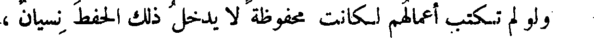
ولو لم تكتب أعمالهم لكانت محفوظة لا يدخل ذلك الحفظ نسيان ،
File: 000772.gt.txt (if the image is defective, simply delete all Arabic text and the line will be excluded)
ولكنه تعالى وعز ، علم أن كتاب المحفوظ ونسخه ، أوكد وأبلغ
File: 000773.gt.txt (if the image is defective, simply delete all Arabic text and the line will be excluded)
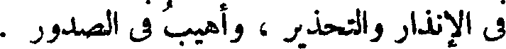
فى الإنذار والتحذير ، وأهيب فى الصدور .
File: 000774.gt.txt (if the image is defective, simply delete all Arabic text and the line will be excluded)
وبعد ؛ فإن هذه الشهرية الخراسانية ؛ يخرج لها أبدان فوق أبدان
File: 000775.gt.txt (if the image is defective, simply delete all Arabic text and the line will be excluded)
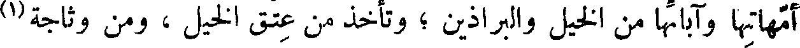
أمهاتها وآبائها من الخيل والبراذين ؛ وتأخذ من عتق الخيل ، ومن وثاجة(1)
File: 000776.gt.txt (if the image is defective, simply delete all Arabic text and the line will be excluded)
البراذين ؛ وليس نتاجها كنتاج البرذون خالصا والفرس خالصا .
File: 000777.gt.txt (if the image is defective, simply delete all Arabic text and the line will be excluded)
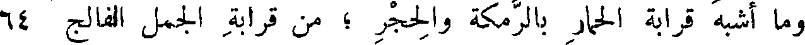
وما أشبه قرابة الحمار بالرمكة والحجر ؛ من قرابة الجمل الفالج 64
File: 000778.gt.txt (if the image is defective, simply delete all Arabic text and the line will be excluded)
البختي بقرابة القلوص الأعرابية .
File: 000779.gt.txt (if the image is defective, simply delete all Arabic text and the line will be excluded)

( الحمر الوشية )
To Save: `Ctrl+s`, make sure to choose `Webpage, complete`!